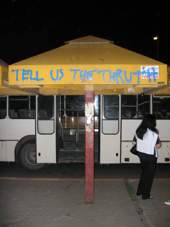

Gde žive kreativni
Relativno nove knjige uticajnih američkih autora iz oblasti urbane sociologije odbacuju dosadašnje mišljenje o povezanosti korporativnog razvoja i stanovanja. Dok ustaljena teorija daje prednost inicijativama korporacija pri izboru lokacija, ovi autori tvrde da se sada velike kompanije sele tamo gde su koncentrisani najtraženiji kadrovi. (Lokalna paralela bilo bi nastanjivanje po Novom Beogradu, u blizinu Delte i drugih Airport i Intesa citija i tornjeva, sadašnjih ili budućih). Prosperitet gradova sada zavisi od toga koliko su u stanju da zadovolje različite životne stilove i uslove stanovanja sa kulturnim sadržajem, odgovarajućim ekološkim nivoom, vitalnošću susedstva, društvenom raznolikošću, autentičnošću i posebnošću lokalnog karaktera.
Džoel Kotkin u 'Novoj grografiji' osim ostalih izvora koristi i intervjue koje je pravio sa preduzetnicima, menadžerima i čelnim ljudima lokalnih vlasti, kako bi istražio koja to mesta privlače ili gube odrešene tipove 'ljudskog kapitala', a time i ekonomski razvitak, jer 'tamo gde je inteligencija – bez obzira na to da li se radi o velikom ili malom gradu – tamo se koncentriše i bogatstvo'. Tako 'butik gradovi', tj. manja, kompaktna naselja ili revitalizovani delovi velikih gradova obično privlače visoko obrazovane ljude, obično bezu dece, kao i njihove poslodavce u sferama dizajna, marketinga, medija i finansijskog sektora. U 'nerdistanima', zaposleni u sferi visokih tehnologija rade u velikim kampusima i zasnivaju porodice u socijalno homogenim susedstvima na periferijama metropola. Elitne ruralne lokacije privlače najfleksibilnije u kreativnoj sferi, obično starije, koji mogu da rade sa bilo koje lokacije, ali biraju prestižna imanja u prirodnom ambijentu. Iz prikaza knjige:
«Joel Kotkin's The New Geography (which claims to explain, "How the Digital Revolution is Reshaping the American Landscape") is concerned mainly with the shifting proclivities of the newly emerging economic elite of the information economy. Blessed with exorbitant wealth and freed from geographical necessities that tied the earlier industrial elite to urban centers, this new class is free to relocate based mainly on the aesthetic qualities of their new "homes."»
Meni se ovakav koncept jako sviđa ali, kao što već rekoh, problemi su kompleksni.
***
Opet, kod nas postoje druge stvari, često zanimljive i atraktivne. Evo na primer ovog dole odlomka. On je iz teksta 'Belgrade: A look through the rear-view mirror', cija je teza da je Beograd Europe's Best-Kept Secret.
New Belgrade presents itself as an outright assault on your visual aesthetic senses organised with a militaristic regimentation of form and function with faint undertones similar to Easter Island monoliths to forgotten gods of bygone civilisations fallen victim to auto-extinction. Block upon block, row upon row, tower upon tower, apartment upon apartment, citizen upon citizen – if the fractal-brutalism architectural movement ever existed, it’s experimental base was New Belgrade.
To bi bila bad news, da uopšte ima nešto novo. Good news bi bila ova percepcija:
Yet within these stepped, monotonous, towering, cubist habitation-units, humanity’s urges for community, individualism and belonging are evident at the macroscopic level. There is warmth within these towers on a physical and inter-personal level, neighborly connections that are so obviously lacking in a city such as London and a sense of belonging that is carried on throughout life. To live for a while as a resident is to be granted membership to a block club, returning to block reunions after many years, sharing something undefined yet strongly connecting with strangers met in bars from the same block, instantly setting tongue-in-cheek rivalry with other block-clans.
Ja sam jedno pola godine živela u blizini Beogradske arene. Kad još nije bila završena. I bio je period takozvane početne tranzicije. I uznapredovale urbane erozije. Znači: privatni biznis u vidu valjanja kradenih mobilnih telefona, državne prodavnice sa tekstilnom robom muzejske vrednosti, sijalice koje ne rade, nezaposleni, đaci, penzioneri i ostali koji dangube naokolo bez jasne svrhe i smisla. Samo dve-tri godine kasnije, kraj izgleda potpuno drugačije, gomile novih zgrada, prodavnica, banaka, čak i ulica. Nisu baš kućice u cveću ili spori gradovi, na zelenilu se štedi, ali za stadijum prvobitne akumulacije kapitala na brdovitom Balkanu uopšte nije loše.
 RSS feed
RSS feed
 sadržaji se objavljuju pod
sadržaji se objavljuju pod